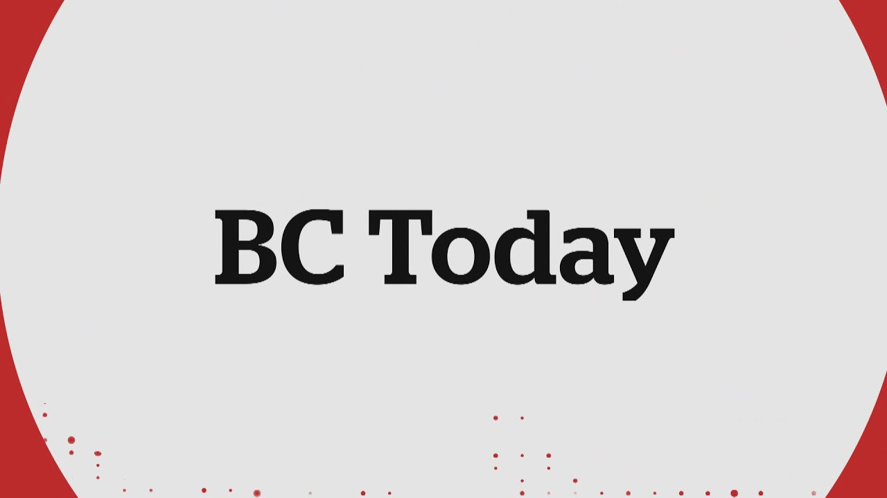

【7月11日BC今日：特朗普最新威胁将对加拿大商品加征35%关税 | 小费通胀】
Summary: President Trump threatens a 35% tariff on Canadian goods by August 1st, raising questions about its legitimacy and Canada's response. Meanwhile, tip prompts are becoming more common, sparking debate among Canadians.
摘要： 特朗普总统威胁在8月1日前对加拿大商品加征35%关税，引发对其真实意图及加拿大应对策略的质疑。与此同时，小费提示愈发普遍，在加拿大人中引发讨论。

⏱️ Estimated Reading Time: 76 min
📚 四级生词 📚 六级生词 📚 雅思生词 📚 托福生词 📚 专八生词 📚 SAT生词 📚 考研生词 📚 GRE生词 📚 高考生词 📚 其它生词生词
Good afternoon and thank you for joining us today.
下午好，感谢您今天加入我们。
President Trump is threatening a 35% tariff on all Canadian goods by August 1st.
特朗普总统威胁在8月1日前对所有加拿大商品加征35%关税。
But is it a real move or political posturing and what's Canada's next play?
但这是真实行动还是政治作态？加拿大的下一步是什么？
And from counter-service to coffee runs, tip prompts keep popping up.
从柜台服务到咖啡店，小费提示不断出现。
But as tipflation spreads, our Canadians hitting their tipping point.
但随着小费通胀蔓延，加拿大人正达到忍耐极限。
I'm Amy Bell in for Michelle Elliott.
我是艾米·贝尔，代替米歇尔·埃利奥特。
And this is BC Today.
这里是《BC今日》。
Thank you for joining us on Radio TV and Line Stream.
感谢您通过广播、电视和在线流媒体加入我们。
You can call us now on our top story.
您现在可以就我们的头条新闻致电我们。
How seriously do you take Trump's tariff threats?
您如何看待特朗普的关税威胁？
Our number is 604-669-3733.
我们的号码是604-669-3733。
You can also call 1-800-825-5950 or hit pound 690.
您也可以拨打1-800-825-5950或按井号690。
Email us, BC Today at CBC.ca or comment on our TikTok live at CBC, British Columbia.
给我们发邮件：BC Today@CBC.ca，或在我们的TikTok直播@CBCBritishColumbia上评论。
It has been months of back and forth tariff negotiations between Canada and the US.
加拿大和美国之间的关税谈判已持续数月。
And now that saga hits another pressure point with Donald Trump's latest move.
如今，随着特朗普的最新行动，这一争端又迎来新的压力点。
In a letter sent to Prime Minister Mark Carney, the US President is now threatening to slap a higher tariff rate of 35 percent on Canadian goods, saying the rate would take effect on August 1st.
在一封致总理马克·卡尼的信中，美国总统威胁对加拿大商品加征35%的关税，称该税率将于8月1日生效。
Canada and the US have been locked in negotiations to come to some sort of trade resolution by July 21st.
加拿大和美国一直在谈判，试图在7月21日前达成某种贸易解决方案。
But now Carney has extended that deadline to August 1st.
但卡尼现已将最后期限延长至8月1日。
The Prime Minister's office says Mark Carney will not offer remarks today in response to the fresh threat.
总理办公室表示，马克·卡尼今天不会就这一新威胁发表评论。
In a statement last night, he said the Canadian government will work towards the revised deadline and reiterate his commitment to protect workers.
在昨晚的一份声明中，他表示加拿大政府将努力在修订后的截止日期前完成工作，并重申他保护工人的承诺。
Trump briefly addressed the letter earlier.
特朗普早些时候简要提到了这封信。
It was sent yesterday they called.
他们昨天寄出了这封信。
I think it was fairly well received.
我认为反响相当不错。
What we need.
我们需要的。
So we'll see what happens.
所以我们拭目以待。
We've been taking advantage of for many, many years by countries.
多年来，我们一直被其他国家占便宜。
Both friends in phone and frankly the friends have been worse than the phones in many cases.
无论是盟友还是其他国家，坦白说在很多情况下盟友比其他国家更糟糕。
So I would say just keep working.
所以我想说继续努力吧。
It's all going to work out.
一切都会解决的。
Prime said Trump cited fentanyl quote pouring into unquote the US as one justification for the tariffs.
特朗普称芬太尼“涌入”美国是加征关税的理由之一。
That claim allows him to invoke special emergency powers that enable him to impose tariffs to protect American national security.
这一说法使他能够动用特殊紧急权力，以保护美国国家安全为由加征关税。
He wrote to Mark Carney, if Canada works with me to stop the flow of fentanyl, we will perhaps consider an adjustment to this letter.
他在给马克·卡尼的信中写道，如果加拿大与我合作阻止芬太尼流通，我们可能会考虑对这封信进行调整。
Mayor David E.B. took issue with those claims talking to X and speaking to reporters in Prince George last night.
市长戴维·E.B.昨晚在X上和乔治王子城向记者发表讲话时对这些说法提出异议。
The letter is flailing.
这封信毫无章法。
It's factually incorrect and other efforts do come to mind.
它在事实上是错误的，而且让人联想到其他努力。
It really underlines the importance of the work we're doing in Canada to build a country where we're able to stand on our own two feet, diversify markets and ensure that we're supporting each other across the country.
这确实凸显了我们在加拿大所做工作的重要性，即建设一个能够自力更生、市场多元化并确保全国相互支持的国家。
In a statement last night, Mark Carney said Canada has made vital progress in stopping the flow of fentanyl in North America.
马克·卡尼在昨晚的一份声明中表示，加拿大在阻止芬太尼在北美流通方面取得了重要进展。
So here's what we know about the flow of fentanyl from Canada to the US.
以下是关于芬太尼从加拿大流入美国的情况。
These figures are from US Customs and Border Protection.
这些数据来自美国海关和边境保护局。
Between October 2024 and May 2025, Border Patrol Agent, sorry, sees 26 kilograms of fentanyl at the US Canada border.
在2024年10月至2025年5月期间，边境巡逻人员在美加边境查获26公斤芬太尼。
The previous year between October 2023 and October 2024, 19 kilograms were seized.
在2023年10月至2024年10月期间，查获了19公斤。
While this data shows an increase of seizures at the Northern Border, Canada is a significantly smaller player compared to the 3700 kilograms of fentanyl agencies at the US Mexico border this fiscal year.
虽然这一数据显示北部边境的缉获量有所增加，但与本财年美国墨西哥边境机构查获的3700公斤芬太尼相比，加拿大的数量要小得多。
Prime Minister Mark Carney will be meeting on July 15 with his cabinet and the premieres to discuss a response.
总理马克·卡尼将于7月15日与内阁和各省省长会面，讨论应对措施。
As for Thursday's 35% tariff announcement, we've seen this before.
至于周四宣布的35%关税，我们以前见过这种情况。
It started on February 1st, 12 days after the President's inauguration when he first announced a 25% tariff on most Canadian goods and a 10% tariff on Canadian energy products.
这一切始于2月1日，即总统就职12天后，他首次宣布对大多数加拿大商品加征25%关税，对加拿大能源产品加征10%关税。
Then tariffs on steel and aluminum came followed by automobiles and auto parts followed by copper earlier this week.
随后是对钢铁和铝加征关税，接着是汽车和汽车零部件，本周早些时候又对铜加征关税。
The term taco, TACO, has become popularized this year as well.
“Taco”一词今年也开始流行。
Trump always chickens out, but will he this time?
特朗普总是临阵退缩，但这次他会吗？
So we're asking you, how seriously do you take Trump's recurring tariff threats and how should Canada respond?
所以我们想问您，您如何看待特朗普一再发出的关税威胁？加拿大应如何应对？
Call us at 1-800-825-5950, pound 690 on your cell phone.
请拨打1-800-825-5950，手机用户请按井号690。
You can email B.C. today at cbc.ca.
您也可以发送电子邮件至B.C. today@cbc.ca。
Joining me now is Jovian Radochwar.
现在与我连线的是约维安·拉多克瓦尔。
He is a political science instructor at Douglas College.
他是道格拉斯学院的政治学讲师。
Douglas College, sorry, Hi Jovian.
道格拉斯学院，抱歉，你好，约维安。
Thanks for joining us.
感谢您加入我们。
Hi, Amy.
你好，艾米。
Thanks for having me.
谢谢邀请。
So I guess first off, what do you make of Trump's new announcement of this 35% tariff across most Canadian goods on August 1st?
那么首先，您如何看待特朗普宣布在8月1日对大多数加拿大商品加征35%关税的新消息？
Well, I think it's clear that this is not about economics.
嗯，我认为很明显这不是经济问题。
It's about politics.
这是政治问题。
If it was about economics, it would just be the most awful policy ever, which of course it is.
如果是经济问题，这将是有史以来最糟糕的政策，当然它确实是。
But it's about politics.
但这是政治问题。
It's about threats.
这是关于威胁。
It's about being able to use threats as leverage, negotiating leverage.
这是关于利用威胁作为谈判筹码。
And we know that Trump has certain designs on Canadian territory sovereignty markets, market share and resources, natural resources.
我们知道特朗普对加拿大的领土主权、市场份额和自然资源有所图谋。
We know that there's some politicians in Canada that have been flirting with the idea of sovereignty for various provinces.
我们知道加拿大有一些政客一直在鼓吹各省主权。
And there's an undercurrent in some cases of support for that.
而且在某些情况下存在支持这种想法的暗流。
Not much I would add.
我不再多说。
It's a very small minority, but it's a group that's increasingly emboldened.
这是一个非常小的少数群体，但这个群体越来越大胆。
So I think this is about politics.
所以我认为这是政治问题。
All right.
好的。
Jovian, our fun lines are going off the hook.
约维安，我们的热线电话被打爆了。
This is obviously a hot topic for a lot of people.
显然，这对很多人来说是个热门话题。
We'll get to the first one.
我们来接听第一个电话。
Chris in Richmond.
里士满的克里斯。
Hi Chris.
你好，克里斯。
Hello.
你好。
Hi.
你好。
How are you feeling about Trump's latest tariffs?
您如何看待特朗普的最新关税？
I'm definitely, I think these ones will have a smaller impact.
我肯定认为这些关税的影响会小一些。
Okay.
好的。
But overall, with a steel, aluminum, bottles, they're definitely going to be a big impact to both job security and like cost of living as well for those people.
但总体而言，钢铁、铝、瓶子等关税肯定会对这些人的就业安全和生活成本产生重大影响。
Mm-hmm.
嗯。
But one thing I think we really need to look at is ways to alleviate these impacts.
但我认为我们真正需要关注的是如何减轻这些影响。
And I think like public transit is actually quite important here.
我认为公共交通在这里实际上非常重要。
How so?
怎么说？
Yesterday, the launch of the Mark Vs, we're going to get more people on the trains.
昨天，马克五号的推出将使更多人乘坐火车。
That means fewer people in cars that need to spend money on the gas and spend money on insurance and maintenance and so on and so forth.
这意味着更少的人需要花钱在汽车、汽油、保险和维护等方面。
And we'll also employ more bus drivers and more bus manufacturers as well.
我们还将雇佣更多的公交车司机和公交车制造商。
All very good points Chris.
克里斯，这些都是非常好的观点。
Thank you for that.
谢谢您。
Yeah.
是的。
Thank you.
谢谢。
It's really a big deal with Trump who is slightly less moneywhisy and we will be milligrams.
特朗普的问题确实很大，他稍微不那么吝啬，我们将是毫克。
And sobins were sitting below me and I'm sure we're going to be able to be very content resilient.
索宾斯坐在我下面，我相信我们将能够非常有弹性。
There was an article that was published just a few days ago on the Canadian Center for Policy Alternatives website by the journalist, Paris Marx, who advocates in that article for building cloud infrastructure, publicly through a crown corporation in Canada.
几天前，记者帕里斯·马克思在加拿大政策替代中心网站上发表了一篇文章，他在文章中主张通过加拿大的国有公司公开建设云基础设施。
And that being a way to ease our dependence on the American tech giants.
这是减轻我们对美国科技巨头依赖的一种方式。
Of course, the recent issue with the digital services tax and the government's climb down from going through with that tax, you know, illustrate this point.
当然，最近数字服务税的问题以及政府放弃实施该税的做法说明了这一点。
So there are many examples in our economy where we could have a kind of backbone of public investment that would give us a lot of resiliency.
因此，在我们的经济中有很多例子表明，我们可以通过公共投资建立一种支柱，从而赋予我们很大的弹性。
A lot of people echoing that focusing inward and strengthening what we have.
很多人呼应这一点，即关注内部并加强我们已有的东西。
So we're less reliant on the US.
这样我们就不那么依赖美国了。
We'll take a call now from Cam in Cobble Hill.
我们现在接听科布尔山卡姆的电话。
Hi, Cam.
你好，卡姆。
How are you feeling about this latest round of tariffs?
您如何看待这一轮最新关税？
I'm worried about it.
我很担心。
I think CBC 2, nobody brings up a hear about these pipelines getting built.
我认为CBC 2，没有人提到这些管道的建设。
And we turn the crude that we get from the tar sands, which is heavy oil or we'll ever turn it into light oil or light crude to where it's going to be exported.
我们将从油砂中获得的原油（重油）转化为轻油或轻质原油，然后出口。
It's easier to clean up.
这样更容易清理。
I should employ some people here.
我应该在这里雇佣一些人。
We'll build some refineries.
我们将建造一些炼油厂。
They used to have seven refineries in British Columbia.
他们过去在不列颠哥伦比亚省有七家炼油厂。
And now you only have two.
现在只有两家。
You just have truck manufacturers, the largest truck manufacturer in Canada was Haze from 1922 to 1975.
你只有卡车制造商，加拿大最大的卡车制造商是1922年至1975年的Haze。
And that included trucks and specific.
这包括卡车和特定车辆。
All bought up, the Haze were shut down by an American company.
全部被收购，Haze被一家美国公司关闭。
I mean, we got to, I think we should cut off the amount of pot, no pot ash and cut off the oil.
我的意思是，我认为我们应该减少钾肥的数量，不，钾肥和石油。
And I think the premier of Australia, Alberta should take a look at doing something for Canada instead of just the problems of Alberta.
我认为澳大利亚阿尔伯塔省省长应该考虑为加拿大做点什么，而不仅仅是阿尔伯塔省的问题。
And the province that go back should get some oil.
那些回归的省份应该得到一些石油。
Where are they getting their oil from?
他们从哪里获得石油？
They got to look at it there.
他们必须看看那里。
They stopped a lot of stuff that's happened to.
他们阻止了很多事情的发生。
All right, Cam, thank you for that.
好的，卡姆，谢谢您。
And you know, he does, he raises those points that we've seen that systematic over years and years of more business going to the US, more companies from the US taking over Canadian companies.
你知道，他确实提出了这些观点，我们多年来看到越来越多的业务流向美国，越来越多的美国公司收购加拿大公司。
And we really need to perhaps shift so that we are focusing inward and making sure that we aren't reliant on those US companies as much anymore.
我们真的可能需要转变，以便我们关注内部，并确保我们不再那么依赖那些美国公司。
Another call coming in from Yan in Langford, hi Yan.
兰福德的严打来电话，你好，严。
Yeah, hi there.
是的，你好。
It's you on.
是你。
Oh, you're on sorry.
哦，抱歉，你在。
I think it's super serious.
我认为这非常严重。
I think we need a war footing stance.
我认为我们需要一种战时状态。
And I think we need a coalition government.
我认为我们需要一个联合政府。
I'm hearing Baffle Gab from all the different premieres, you know, Daniel Smith and Dave E.B. and Rob Ford and the Quebec guy, Yeeve Lange, whatever it is.
我听到所有不同省长的胡言乱语，你知道，丹尼尔·史密斯、戴维·E.B.、罗布·福特和魁北克的那个家伙，伊夫·兰格，不管是谁。
And then at the federal level, we're hearing Paul Yeeve bluster.
然后在联邦层面，我们听到保罗·伊夫的虚张声势。
And I think we need to take a war stance and look at forming a coalition that of individuals, you know, members of parliament at the federal level who are different serious.
我认为我们需要采取一种战时姿态，并考虑组建一个由联邦层面不同严肃的国会议员组成的联盟。
This is a very serious thing for the next four years.
这对未来四年来说是非常严重的事情。
And so I just think that we need to take it seriously.
所以我认为我们需要认真对待。
That's what I think.
这是我的看法。
Well, thank you, Yan.
好的，谢谢燕。
And I think, Jovian, we were sort of talking about this, you know, we come up with these acronyms like Taco and sort of see a lot of bluster and bullying in Trump's words.
我认为，乔维安，我们之前讨论过这一点，我们创造了像Taco这样的缩写词，并在特朗普的言论中看到了很多虚张声势和霸凌。
And as we see more and more of these tariffs, it's kind of like the boy who cried well, if you stop paying attention as much.
随着我们看到的关税越来越多，这有点像“狼来了”的故事，如果你不再那么关注的话。
But we really do need to always pay attention because we never know what Trump is going to do or what he's capable of.
但我们确实需要时刻保持警惕，因为我们永远不知道特朗普会做什么或他能做到什么程度。
I'm curious why you think would even sort of lay on this new 35% tariff right now when we're in the middle of these negotiations with the U.S. to come to a trade agreement?
我很好奇，为什么你认为在我们与美国进行贸易协议谈判的过程中，他会突然加征35%的关税？
You know, it's a very astute analysis and question.
这是一个非常敏锐的分析和问题。
And I think that it's really important to understand that there's a psychological dimension to what's going on with Donald Trump right now.
我认为，理解特朗普当前行为的心理层面非常重要。
He's clearly very interested in power.
他显然对权力非常热衷。
If I can put that very politely, he's quite concerned about his power, his power levels, his insecurity around having enough powers, also powerful.
如果委婉地说，他非常在意自己的权力、权力水平，以及对自己是否拥有足够权力的不安全感。
The whole world is experiencing that right now from negotiating with Iran to then striking Iran to, you know, launching these horrific ice raids in Southern California in the last few days to levying tariffs, not just against Canada, but also Japan and South Korea in the recent days as well.
全世界现在都在经历这一点，从与伊朗谈判到打击伊朗，再到最近几天在南加州发起的可怕ICE突袭，以及最近对加拿大、日本和韩国加征关税。
And of course, Brazil was in the news yesterday before the 35% number regarding Canada came up.
当然，在加拿大35%关税的消息出现之前，巴西昨天也上了新闻。
There was a 50% number regarding Brazil.
巴西的关税高达50%。
And that's not about economics.
这与经济无关。
The Brazil tariffs, that's about politics explicitly.
巴西的关税完全是政治性的。
He's going to bat for a jire Bolsonaro.
他在为博索纳罗站台。
So Trump is lashing out in a way that somebody having a mental decline is lashing out.
因此，特朗普的爆发方式就像一个心智衰退的人在发泄。
And I agree we really need to take this very seriously, bring everybody on board.
我同意我们确实需要非常认真地对待这一点，让所有人都参与进来。
If it's formally a coalition government or not, that's another question.
这是否是一个正式的联合政府，是另一个问题。
But indeed, you know, the conservatives did vote with the carny government on the nation building bill recently.
但事实上，保守党最近确实在《国家建设法案》上与卡尼政府投了赞成票。
And so that suggests that there's at least a nucleus of some people from all sides of the political spectrum in Canada that are trying to step up and defend Canada.
这表明，加拿大政坛各方至少有一部分核心人士正在努力站出来捍卫加拿大。
And indeed, we're going to have to think much more creatively about the kinds of steps that we have to take.
事实上，我们必须更有创造性地思考我们需要采取的措施。
And I hope that that's something that carny and the premieres are going to address in their coming meetings.
我希望这是卡尼和各省省长在即将举行的会议上要解决的问题。
I'll take another call now from Julian.
我现在接听朱利安的来电。
Hi, Julian.
你好，朱利安。
Thanks for calling in.
感谢来电。
Hello.
你好。
How are you feeling?
你感觉如何？
I am number one, he's talk.
我是第一名，他在说话。
But one thing that we don't have any large appliance manufacturing in this country, there's all the talk about infrastructure, but this is a different kind of infrastructure.
但有一点，我们国家没有任何大型家电制造业，大家都在谈论基础设施，但这是另一种基础设施。
There are no domestically made large appliances.
我们没有国产的大型家电。
We could use the copper, the steel, the aluminum, the expertise, and the downed automotive facilities to retool and start producing our own domestic appliances.
我们可以利用铜、钢、铝、专业技术以及闲置的汽车工厂来改造并开始生产我们自己的国产家电。
With, for example, things that we need here, I have a fridge that's 24 inches.
例如，我们需要的东西，我有一个24英寸的冰箱。
I cannot get an energy star fridge in that size.
我买不到这个尺寸的节能冰箱。
Right.
对。
Right.
对。
So tool for Canada, use the resources that we have, produce something we need.
所以，为加拿大打造工具，利用我们拥有的资源，生产我们需要的东西。
Very fair point, Jillian.
非常有道理，朱利安。
Thank you so much for calling in.
非常感谢你的来电。
Jillian, you know, you used to mention it as well with this nucleus of a perhaps a coalition government.
朱利安，你也曾提到过这个可能的联合政府的核心。
You know, if Trump has done nothing else, it seems to have united a lot of people across the country that perhaps may not see eye to eye.
如果特朗普没有做其他事情，他似乎已经团结了许多原本意见不一的人。
How do we sort of keep that momentum going forward?
我们如何保持这种势头？
So as we focus inward, we're not, you know, fighting against each other as much.
这样，当我们专注于内部时，我们就不会互相争斗。
Yeah, that's a great question too, you know, before the election, meaning our Canadian election, there was of course a lot of division in the months leading up to the election.
这也是一个很好的问题，在选举之前，也就是加拿大选举之前，选举前的几个月当然有很多分歧。
Of course, when Trump started making his threats, we have the switch of Carney for Trudeau.
当然，当特朗普开始发出威胁时，我们从特鲁多换成了卡尼。
And then, you know, we see a bit more unity around Carney as a sort of uniting figure.
然后，我们看到围绕卡尼作为团结人物的更多团结。
But recently with the capitulation on the digital services tax, I think that he really challenged his brand to some degree.
但最近在数字服务税上的让步，我认为这在某种程度上挑战了他的形象。
So I really hope that he manages to get some support back, maybe even consider bringing that tax back just as a signal to say that we're going to stand up.
所以我真的希望他能重新获得一些支持，甚至考虑重新征收这项税，作为表明我们要站起来的信号。
You know, the digital services taxes have been applied in other countries.
你知道，其他国家已经实施了数字服务税。
So certainly we're in a position to at least do what the European Union is doing.
所以我们当然有能力至少做欧盟正在做的事情。
So we really need to rally people around that message and they need to message around it a little better.
因此，我们真的需要围绕这一信息团结人们，他们需要更好地传达这一信息。
The people in Ottawa need to really get people on board around the country with, you know, effective messaging about the need to stand up against Trump and call him out for what he is.
渥太华的人需要让全国上下都参与进来，有效地传达信息，表明我们需要站起来反对特朗普，并揭露他的本质。
This is a dictator.
这是一个独裁者。
This is a person that's engaging in fascist politics.
这是一个推行法西斯政治的人。
And the world has not done well when there have been fascists in neighboring countries don't do particularly well either.
当邻国出现法西斯分子时，世界的情况并不好，邻国的情况也不太好。
And we really are facing a grave threat to our sovereignty, right?
我们确实面临着对我们主权的严重威胁，对吧？
The economic issue is very important.
经济问题非常重要。
And it's a microcosm of the sovereignty issue, but the sovereignty issue is the bigger issue right now.
它是主权问题的一个缩影，但主权问题是当前更大的问题。
That's an excellent point.
这是一个非常好的观点。
I appreciate you making that.
感谢你提出这一点。
We do have a comment on our TikTok live.
我们在TikTok直播上有一条评论。
It's from Victoria Hayden, 851.
来自维多利亚·海登，851。
It says, Trump is destroying the U.S. Don't give him a foothold in Canada.
上面写着，特朗普正在摧毁美国。不要让他进入加拿大。
We also have an email from Lorraine that states, I am thankful to David Eby for standing up for us British Columbians.
我们还收到了洛林的电子邮件，上面写道，我感谢大卫·伊比为不列颠哥伦比亚省人民挺身而出。
I do hope to see the same thing with Mark Carney.
我确实希望看到马克·卡尼也能这样做。
He needs to show Donald Trump that we will not stand down.
他需要向特朗普表明，我们不会退缩。
In the letter regarding these latest Trump wrote that he will increase the levees if Canada retaliates.
在关于这些最新情况的信中，特朗普写道，如果加拿大报复，他将提高关税。
And he has done this before.
他以前也这样做过。
So in a sense does he have the upper hand here?
所以从某种意义上说，他在这里占据上风吗？
I mean, he does in so far as America's economy is, I guess the numbers, what about 10 times are so bigger than Canada's economy?
我的意思是，就美国经济而言，我想数字大约是加拿大经济的10倍左右？
So that's something that gives him leverage baked into the negotiation.
所以这给了他在谈判中的筹码。
Does his tactic necessarily indicate sophistication?
他的策略是否一定意味着复杂？
I don't know.
我不知道。
I don't think so, frankly.
老实说，我不这么认为。
It's just essentially using his larger size to try to bully.
这基本上是利用他的更大规模来试图霸凌。
But that doesn't mean that we don't have some things that we can do in response.
但这并不意味着我们没有一些可以回应的措施。
And of course, we run the risk of higher tariffs.
当然，我们面临更高关税的风险。
But in a way, small businesses are going to be the ones that are most hurt by the uncertainty.
但在某种程度上，小企业将是最受不确定性伤害的。
Maybe even big businesses too, because 35% is of course a very large number in terms of an amount for tariffs.
甚至大企业也可能如此，因为35%的关税金额当然非常大。
But small businesses are going to see a massacre because they can't really plan their buying and their inventory practices at all at this point.
但小企业将面临一场屠杀，因为他们现在根本无法规划采购和库存管理。
Because even if he's going to chicken out, it creates so much market uncertainty that if they're borrowing money in order to do expansion of production, this sort of thing, they're not going to be able to get a reliable lending relationship with a bank.
因为即使他退缩，也会造成如此大的市场不确定性，如果他们为了扩大生产而借钱，这类事情，他们将无法与银行建立可靠的借贷关系。
And banks are going to be leery of lending money as well.
银行也会对放贷持谨慎态度。
And this can of course put a lot of pressure on the macro economics, meaning the finances of Canada, the value of the Canadian dollar.
这当然会给宏观经济带来很大压力，即加拿大的财政状况、加元的价值。
So we really have to think about how to shore up the value of the Canadian dollar, make Canada a target for investors around the world except for the United States, and also build up our domestic capacity at the same time.
因此，我们真的需要考虑如何支撑加元的价值，使加拿大成为除美国以外的全球投资者的目标，同时也要增强我们的国内能力。
And also at the same time, make sure that we have strong alliances with other countries.
同时，确保我们与其他国家建立牢固的联盟。
We see recently the UK and France saying that they're going to cover each other with regard to nuclear umbrella security.
我们最近看到英国和法国表示，他们将在核保护伞安全方面互相支持。
We might be in a similar situation sooner than we'd like to be.
我们可能很快就会面临类似的情况。
And that's what I was going to ask you as well.
这也是我想问你的。
If we look globally, are there certain partners that you think would be the smartest, certain countries or areas or governments, even that we would be well suited to partner with?
如果我们从全球来看，你认为哪些合作伙伴最明智，哪些国家、地区或政府最适合我们合作？
Well, I think that Canada would be really well suited to work with the EU, maybe even join the EU.
我认为加拿大非常适合与欧盟合作，甚至可能加入欧盟。
That might be a formal joining or some kind of a liaison relationship where we're sort of inside the EU without actually being inside the EU.
这可能是正式加入，也可能是某种联络关系，我们某种程度上在欧盟内部，但实际上并不在欧盟内部。
Maybe not adopting the euro for example.
例如，可能不采用欧元。
But something like that would be essential.
但类似的事情是必要的。
France has been quite strong in its relationship with Canada, Macron and the Karni seem to get along quite well.
法国与加拿大的关系非常牢固，马克龙和卡尼似乎相处得很好。
Kierstarmour has not been as strong with regard to supporting Canada because they have their own sort of special Atlantic relationship with the US that they're trying to preserve right now.
基尔·斯塔默在支持加拿大方面没有那么坚定，因为他们现在正试图保持与美国的那种特殊的大西洋关系。
But I imagine that they're facing a lot of these issues as well.
但我想他们也面临着许多这样的问题。
So there is a kind of coalition that can emerge.
因此，可以形成一种联盟。
Recently, we've also been exploring buying defense hardware from South Korea.
最近，我们还在探索从韩国购买国防硬件。
I think that would be a very intelligent thing to further go down that line.
我认为进一步推进这一点将是非常明智的。
Japan as well would perhaps be a good potential ally.
日本也可能是一个很好的潜在盟友。
And while we don't see eye to eye for good reason on politics with the government of the people's Republic of China, at the very least, it's a country that is not politically threatening Canada right now.
尽管我们与中华人民共和国政府在政治上出于充分理由意见不一，但至少，这是一个目前没有在政治上威胁加拿大的国家。
We face the same issue about their larger companies possibly taking over part of our market share.
我们面临着同样的问题，即他们的大公司可能占据我们的一部分市场份额。
So we would have to be careful about that relationship.
因此，我们必须谨慎对待这种关系。
But certainly if we can come up with a mutually agreeable mutually beneficial relationship with China while also preserving our political sovereignty, at the very least that might allow us to leverage that relationship.
但当然，如果我们能与中国达成一种双方都同意、互利的关系，同时保持我们的政治主权，至少这可能让我们利用这种关系。
But these things are all very difficult because of course we know when Ukraine started getting closer to the EU, that of course invoked the ire of their bigger neighbor to the North, right, the Russians.
但所有这些都非常困难，因为我们知道，当乌克兰开始接近欧盟时，当然激怒了它北方的更大邻国，即俄罗斯。
And we are actually in a very similar position.
而我们实际上处于非常相似的境地。
It's very dangerous.
这非常危险。
Jovian, we'll have to leave it there.
乔维安，我们不得不就此打住。
But thank you as always for taking and making time for us today.
但一如既往地感谢你今天抽出时间与我们交流。
Thank you so much, Amy.
非常感谢，艾米。
Jovian Radishwar is a political science instructor at Douglass College and feel free to keep your emails coming in on this subject.
乔维安·拉迪什瓦尔是道格拉斯学院的政治学讲师，欢迎继续就这一主题发送电子邮件。
BCToday at cbc.ca.
BCToday的邮箱是cbc.ca。
It is 1227.
现在是12点27分。
And yesterday we looked at divorce registries to provide support when marriages end, just like wedding registries at the start of the journey.
昨天我们讨论了离婚登记，以在婚姻结束时提供支持，就像婚礼登记在旅程开始时一样。
Here are a few of your comments.
以下是你们的一些评论。
Denise wrote presence, aren't support.
丹尼斯写道，在场不就是支持吗。
Presence is support.
在场就是支持。
I like that.
我喜欢这一点。
Jovian wrote in British Columbia the BC Family Maintenance Agency provides services to help families manage and enforce family maintenance orders and agreements.
乔维安写道，在不列颠哥伦比亚省，BC家庭赡养机构提供服务，帮助家庭管理和执行家庭赡养令和协议。
This includes collecting and distributing support payments as well as taking steps to enforce orders when payments are missed.
这包括收取和分配赡养费，以及在付款被拖欠时采取措施执行命令。
Jovian also stated that the divorce agreement is extremely important and you need to look way into the future.
乔维安还表示，离婚协议极其重要，你需要看得更长远。
Our agreement covered child support until our child completed her university degree research research research and Randy wrote, I like what this represents but feel the illustrations presented were not really well-founded.
我们的协议涵盖了子女抚养费直至孩子完成大学学位研究研究研究，兰迪写道，我喜欢这代表的含义，但认为提供的例证并不充分。
More on the mental supports and less on the towels, meals and legal services would have been more beneficial.
更多关注心理支持而非毛巾、餐食和法律服务会更有利。
Janet said, it sounds like a money grab.
珍妮特说，这听起来像抢钱。
Like most people, I think people should work and accumulate household items gradually and as they can be afforded, why do so many people think they are entitled to household items without working for them.
和大多数人一样，我认为人们应该通过工作逐步添置家当，为何许多人觉得不劳而获是理所当然。
Thank you as always for your thoughts and comments and you can always email us about this or any topic at BCToday at cbc.ca and this is BCToday on cbc we're on radio one cbc television and live streaming on our website cbc.ca slash bc youtube at cbc Vancouver and on the cbc news app.
感谢您的意见与评论，欢迎随时通过BCToday@cbc.ca联系我们。这里是CBC的BCToday节目，您可通过CBC广播一台、电视及官网cbc.ca/bc、YouTube频道CBC Vancouver或CBC新闻应用收看直播。
It is now time for the cbc newscast with Amelia John.
现在请听艾米莉亚·约翰带来的CBC新闻。
Good afternoon.
下午好。
Health Minister Josie Osborne says experts have concluded there is no clinical evidence that a costly rare disease medication that would provide further benefits to Charlie Pollock.
卫生部长乔西·奥斯本表示，专家认定无临床证据表明昂贵罕见病药物会对查理·波洛克产生额外疗效。
Osborne says all evidence presented by advocates for patients of bat disease was considered by the province's expert committee on providing expensive drugs for rare diseases.
奥斯本称，蝙蝠症患者倡导者提交的所有证据已由省罕见病高价药专家委员会审议。
She says the committee stands by its previous ruling to discontinue providing the drug to the girl.
她表示委员会维持此前决定，停止向女孩提供该药物。
Another cyclist has been sent to hospital in Prince George after being hit by a vehicle this morning.
今早又一名骑行者于乔治王子城被车辆撞伤送医。
RCMP say the 17 year old rider has serious injuries.
皇家骑警称17岁伤者伤势严重。
Police have also confirmed the victim of a hit and run who was hospitalized Monday has now died.
警方确认周一因肇事逃逸住院的受害者已身亡。
They've identified the rider is Shane Kelly a member of the cops for cancer charity by pride.
死者为"骄傲抗癌警察"慈善组织成员谢恩·凯利。
And BC's minister of citizen services says to remote West Vancouver Island communities near Euclulit will soon have access to high speed internet.
BC省公民服务部长表示，尤克卢利特附近偏远西温哥华岛社区将很快接入高速网络。
Says the projects will be built and operated by internet service provider city west through investments from the company as well as the provincial and federal governments.
项目将由互联网服务商CityWest承建运营，资金来自企业及省联邦政府投资。
And now the BC forecast along the north coast today rain at heavy at times highs around 15 degrees in the piece mainly cloudy with the chances of showers and wind gusts a high of 21 for the central interior including Prince George showers a bit windy high of 19 in the southeast mainly sunny highs around 30 degrees for the southern interior lots of sun highs around 30 as well and for the south coast sunshine highs around 30 degrees inland.
BC天气预报：北海岸今日有雨局部大雨，最高15度；皮斯地区多云有阵雨，阵风；中部内陆包括乔治王子城有阵雨微风，21度；东南部晴，19度；南部内陆晴朗30度；南海岸内陆晴30度。
And that is your CBC news from Vancouver.
以上是CBC温哥华新闻。
Thank you so much for that Amelia and lots more on the day's top stories on the afternoon show in your region here in Metro Vancouver.
感谢艾米莉亚，更多今日要闻请关注大温地区下午节目。
This is what's coming up on the coast.
以下是《海岸线》节目预告。
Amy hello there it's Gloria Macarango here and I would love it if you could join us for on the coast this afternoon.
大家好，我是格洛丽亚·马卡伦戈，欢迎收听下午《海岸线》节目。
We're going to talk about the opening of the Kitsilano pool yes it's open for the summer but the city is warning that the pool is at the end of its usable lifespan so we're going to talk to a group of Kitspool swimmers who are going to share their hopes and dreams for the future of that iconic pool.
我们将讨论基斯兰诺泳池开放事宜——该泳池虽夏季开放，但市政府警告其已临近使用年限。届时将采访泳客群体，畅谈对这一标志性泳池的未来愿景。
Also three students from Surrey have just taken home awards in Canada's largest science fair so we'll hear more about their projects on the program today and our pop culture column is Rad Simon Pelle will be here.
此外，素里市三名学生刚获加拿大最大科学展会奖项，节目中将详述其项目；流行文化专栏作者拉德·西蒙·佩勒也将做客。
We're going to talk about the latest controversy over the new Superman movie so I hope you can join us for that and much more this afternoon between three and six on the coast.
我们将探讨新版超人电影引发的争议，敬请下午3至6点锁定《海岸线》节目。
Thank you Gloria and you can hear on the coast on CBC Radio 1 in Metro Vancouver and anywhere on the CBC News app.
谢谢格洛丽亚，您可通过大温地区CBC广播一台或CBC新闻应用收听《海岸线》。
From Kozy Coffee Shops in Victoria to fine dining in Vancouver, Bucy's food scene is as rich and diverse as the people behind it but behind every carefully crafted cocktail and tasting menu is a workforce that depends on something many of us are rethinking tipping.
从维多利亚的舒适咖啡馆到温哥华的高级餐厅，BC省餐饮业与其从业者一样丰富多元，但每杯精心调制的鸡尾酒和品鉴菜单背后，都有一群依赖小费的劳动者——而这正引发大众反思。
As the cost of living climbs more people are asking what's up with all the tip prompts even four or at self-serve counters and should restaurants still be leaning on tips to fill that gap left by lower wages.
随着生活成本攀升，越来越多人质疑为何连自助柜台也出现小费选项，餐厅是否仍应依赖小费弥补低薪缺口。
So today we're digging digging into the tipping culture in B.C. How it really works why it's so complicated and what the people in the industry want you to know and of course we want to hear from you what's your take on tipping as tipping got an out of hand.
今日我们深入探讨BC省小费文化：其运作机制、复杂成因及从业者心声，也欢迎听众分享对小费泛滥的看法。
Call us at 1-800-825-5950-604-669-3733-Pound-690 on your cell phone and you can email bctodayatcbc.ca.
拨打热线1-800-825-5950或手机604-669-3733转690，也可发送邮件至bctoday@cbc.ca。
Joining us today are two guests Sean Grady, general manager at Comot, Taperia and Jamie Ma, a bartender at the Fairmont Pacific Rim Hotel and host of the podcast Track and Food.
今日嘉宾：Comot Taperia餐厅总经理肖恩·格雷迪，及费尔蒙环太平洋酒店调酒师兼播客《美食追踪》主持人杰米·马。
Good afternoon to both of you.
下午好。
Afternoon thanks for having us.
下午好，感谢邀请。
Thanks for coming in.
谢谢参与。
Okay so first question, how did you both find yourself in the hospitality industry and how long have you been in the hospitality industry?
首个问题：二位如何进入餐饮业？从业多久？
Sean I'll start with you.
肖恩先请。
Yeah coming up on 10 years in the Russian industry it's kind of the family business it's what my grandpa my dad my sisters all did and it's really like gratifying and almost addicting industry people want you to succeed so even if you tried to make your way out of it it's it's hard to leave so you get pushed into it through the family and it just keeps talking you back in next thing you know you're you're just in a career now.
从业近十年，这算是家族事业——祖父、父亲和姐妹都从事这行。餐饮业令人满足甚至上瘾，周围人都希望你成功，即便试图转行也难以彻底离开。家族影响让我入行，而这职业总有办法让你回归，不知不觉这就成了终身事业。
I love that Jamie how long have you been in?
说得好，杰米你呢？
Oh man I started at McDonald's when I was 16 and then did that to university and then I started at Earl's and as most people do in this industry and then just kind of grew from there and fell in love with the industry very very quickly.
16岁在麦当劳起步，大学期间继续餐饮工作，后来像多数同行一样进入Earl's餐厅，从此扎根行业并迅速爱上这份工作。
I love working with people I love that dynamic and the energy and the fast-paced environment and obviously I love food and wine and drink so it's it's a really unique industry.
我热爱与人打交道，喜欢那种活力四射的快节奏环境，当然也痴迷美食美酒——这确实是个独特行业。
It is a unique industry and there's so many different you know avenues that you can take in the industry itself in ways that it you know interacts with other industries so it seems like it's always very exciting.
这是个充满多元发展路径的行业，与其他领域的交叉也让它始终充满魅力。
When we think about tips we often think about service good service and that is what we're providing the tip for but what does good service mean what what are people really tipping on?
谈到小费，人们常联想到优质服务，但"优质服务"具体指什么？顾客究竟为何付小费？
John I will start with you again.
约翰，再请你先谈。
Yeah service and hospitality are two different things.
服务与款待是两回事。
You are you are tipping on the service that you're receiving that's being taken to a table having somebody cook the food for you do all the cleaning up for you that is the aspect of service that you're tipping on but on top of that you're also receiving hospitality you're being made feel welcome you're you're feeling like you're part of something they're they're other cultural and emotional aspects to a restaurant that's hospitality workers provide that the tip is kind of just a reward on top of providing that hospitality on top of the service you're already paying for.
小费针对基础服务——引座、烹饪、清洁；而款待则是让你感到宾至如归的文化情感体验。小费是对这种增值体验的额外奖励。
And Jamie do you agree it's sort of service and hospitality being very different in a sense?
杰米是否认同服务与款待存在本质差异？
Yeah I mean like well I mean service you can you can categorize that into a lot of things you know whether you're getting a cab ride with someone and or you're getting coffee at a coffee shop but hospitality especially specifically for what he and I do in our restaurants is we definitely are trying to elevate the experience for the guest and the consumer and we want to make sure that guest feels acknowledged and seen and excited about being a part of the establishment and being you know we want to make sure that they want to come back and have a memorable experience and I think tipping is an old custom that is remained in our culture is it a flawed system probably in some ways I would say but there is good and bad in it in the systems but I think for us as workers we just hope that consumers understand that we are grateful for any tips that we receive and that we really care about what we do and we want to make sure that you have a wonderful experience and so I think that's something that comes from a genuine feeling inside for all of us.
服务可细分多种场景，而款待特指我们餐饮从业者致力于提升顾客体验，让其感受到重视并激发再次光临的意愿。小费作为古老传统虽存在缺陷，但从业者真心感激每份小费，因为这体现我们对工作的热忱。
Yeah and I think I think sometimes people forget about that that it's you know the people that are in the hospitality industry they they genuinely they're not doing it just for the tips they're doing it because they want you to have this this great experience and and the tip is something that could happen and is much appreciated.
人们常忽略餐饮从业者的初心——我们追求创造美好体验，小费只是附带而非目的。
You mentioned something though that I've thought about often that it's you know it's an old tradition I have no idea where that tradition came from like where did we become a tipping society how did that come to be?
你提到小费是古老传统，但它的起源是什么？
Well I mean there's various things you could look back in history but I mean it sadly is kind of born out of slavery.
追溯历史，小费制度可悲地源于奴隶制。
Oh okay.
原来如此。
And it was born out of we're not going to pay you a wage but if you want to get something you know do your best and maybe the people will give you some money.
当时雇主不愿支付工资，而是鼓励劳动者通过讨好顾客获取报酬。
That's kind of a dangling carrot.
就像悬着的胡萝卜。
Hi kind of exactly and I think it's just a custom that's kind of fallen through our society.
正是，这种习俗就这样延续至今。
I think it's interesting in the sense of how people view it.
人们对小费的认知很有趣。
I know some people struggle with it a little bit but I think I think most people are really comfortable making you know providing generosity to people that provide a good memorable experience but I could understand the the change in people's attitudes towards it because before a lot now you're getting these machines handed to you and they're just built in with automatic prompts for you so I can see that obviously is filtering out into other kind of areas of hospitality in some way.
虽然有人抵触，但多数人乐意为美好体验支付小费。不过如今自动小费提示渗透到各个领域，确实改变了人们的态度。
Yeah.
确实。
So I think I can see why people might be like where where does this kind of stop?
难怪人们会问：这种趋势何时休？
Where does it end like where do you draw that line and that uncomfortableness when you're handed that machine and it already has that tip option open there's there's almost an embarrassment sometime of of of clicking the no tip option even when you know that they haven't really provided any service we'll get more into that in a moment.
当面对预设小费选项的机器时，即便未获服务，人们也常因选择"不付小费"感到尴尬——这点稍后再深入。
I do want to get some calls from people that want to weigh in.
现在接听听众来电。
We'll talk to Tom in Kallona.
接通卡洛纳的汤姆。
Hi Tom.
你好汤姆。
Good morning.
早上好。
Good afternoon.
下午好。
How are you?
你好吗？
I'm doing great.
很好。
How do you feel about tipping?
你对小费怎么看？
I am burnt out.
我受够了。
Okay.
请讲。
And I came to a realization as a matter of fact last last three summers in a row we traveled extensively throughout Europe and I noticed something completely different using restaurants as an example.
连续三个夏季在欧洲旅行时，我发现完全不同的情况——以餐厅为例。
There's lots of people who are very small town of large towns who are middle aged adults who are not just college kids or anything like that.
许多中小城镇的餐饮从业者是中年人而非学生。
This is their only job and not a single tip prompt and obviously they make little bridges because this is one job in a small town they're able to pay the rent or whatever it is that the cost of living is our so it is possible to arrange the industry in a way where people can make a little bit of a little bit of income and you can always provide rewards or exceptional service but it is a job after all.
这是他们唯一工作且无需小费，在小城镇靠这份收入就能支付生活开支。这说明行业可以调整薪资结构，额外奖励仍可存在，但应明确这是份正经职业。
Yeah no right.
确实。
The therapist doesn't ask for a tip my barber does.
心理医生不收小费，理发师却要。
You go to a doctor, great service.
看医生获得优质服务。
The receptionist is fantastic customer service.
前台接待出色。
You know everybody we live in a disabled, we exchange services in good old time.
现代社会本应平等交换服务。
Gorshji stores whatever it is.
杂货店等场所也是。
So why is industry in restaurants the only one that's kind of singled out mainly for this tipping option when it is possible in many many countries around the world to earn a little bit of income having that job and it's a fun job when I was young I was doing it.
为何唯独餐饮业保留小费制度？明明全球许多国家都能靠这份有趣职业获得体面收入——我年轻时也做过。
I love the interaction with people.
我曾热爱与人互动。
It's always the adventure you have no idea who the table is going to be but it is a job and they should get paid more in my opinion.
每桌客人都像场冒险，但这终究是份应获合理薪资的工作。
Not rely on us and the tips honestly again ridiculous 18% to start on these multiple options.
别再依赖我们和小费了，说实话，这些多选选项从18%起就很荒谬。
18% and sometimes even 40% which is outrageous asking.
18%甚至有时40%，这种要求太离谱了。
Tom I really appreciate you you calling in because you raise a really good point that you know elsewhere in the world and Europe is what he mentioned.
汤姆，非常感谢你打电话进来，因为你提出了一个很好的观点，你知道世界其他地方和欧洲的情况，正如他提到的。
Being a restaurant server is not treated as a you know a step to a real career it is treated as a real career.
做餐厅服务员不被视为通往真正职业的一步，而是被当作真正的职业。
They're paid as such here in Canada though we know that the you know minimum wage which is what many people in the industries will make is 1785.
在加拿大，他们确实是这样获得报酬的，尽管我们知道许多行业从业者的最低工资是1785加元。
The living wage for Metro Vancouver is 2750 there's a huge disparity there.
大温哥华地区的生活工资是2750加元，这之间存在巨大差距。
So how does the industry make up for that is tips the only answer to sort of not legitimizing these careers but helping people to have this as a career that they can live off that they can fulfill their their you know various demands with.
那么，行业如何弥补这一点？小费是唯一的答案吗？这不仅是为了让这些职业合法化，更是为了让人们能够以此为生，满足他们的各种需求。
Sean I'll put that to you first.
肖恩，我先问你这个问题。
Yeah it is a tough situation that hospitality workers are in in Europe when the cost of living and the cost of operating a business is lower.
是的，在欧洲，当生活成本和经营成本较低时，酒店业工人处境艰难。
It is much easier for restaurants to pay their staff a living wage.
餐厅更容易支付员工生活工资。
Here the cost of operating a business is much higher and unfortunately it's a culture that that responsibility to take care of hospitality staff is falling on the public in different ways this isn't falling on the public in a ways that's reflected on menu cost or the cost of operating this responsibility is falling on our guests to make up that difference in the cost of operating and that's just a reality that restaurant workers have to have to live with and are kind of used to I don't know many hospitality workers who just have one job the beauty and flexibility of hospitality work is that you have the time to pick up extra shifts if you have the capacity and time to work a job in the morning and then work in the restaurant evening or the other way around.
在这里，经营成本要高得多，不幸的是，照顾酒店员工的责任以不同方式落在了公众身上，这不是通过菜单成本或经营成本反映出来的，而是由客人来弥补经营成本的差异，这是餐厅工人必须面对并习惯的现实。我不知道有多少酒店业工人只做一份工作，酒店工作的美妙和灵活之处在于，如果你有能力有时间，可以在早上做一份工作，晚上在餐厅工作，或者反过来。
So it just leads to people needing to work more until the cultural shift happens that has happened in Europe where the responsibility to take care people starts falling on to businesses instead of consumers but right now that's where we're at and that's what hospitality workers are doing to get themselves closer to the livable wage in BC.
因此，这导致人们需要工作更多，直到像欧洲那样的文化转变发生，照顾员工的责任开始由企业而非消费者承担。但现在我们处于这种情况，酒店业工人正在努力让自己更接近BC省的生活工资。
I will take another call now from Chris in Victoria High Cress what are your thoughts on tipping culture?
我现在要接听维多利亚High Cress的克里斯的电话，你对小费文化有什么看法？
Hi thanks very much for taking my call today can you hear me alright?
嗨，非常感谢你今天接听我的电话，你能听清楚吗？
Yes I can thank you.
是的，我能听清，谢谢。
So I spent my youth you know working in jobs where I relied heavily on tips as a part of my wage primarily you know bartending serving that kind of thing.
我年轻时从事的工作主要依赖小费作为收入的一部分，比如调酒和服务之类。
I 100% appreciate that in certain industries if you're getting paid whatever the minimum wage is it probably makes sense for for you to expect some tips for the type of job that you do.
我完全理解在某些行业，如果你的工资只有最低标准，那么根据工作性质期待小费是合理的。
But similar to what you know a lot of other people have said I'm starting to get a little bit burnt out on the fact that I'm getting prompted to tip in you know so many scenarios that I just don't think that it makes sense for me to be supplementing that worker's wage.
但和许多人一样，我开始对在各种不合理场景被要求付小费感到厌倦，认为不该由我来补贴工人的工资。
So I think the major problem is that like all employers from you know people who are you know paying their careered salaries workers all the way to people in you know any basic you know minimum wage job wage job all employers are not keeping up with with salaries that align with the increasing cost of living.
我认为主要问题在于，从高薪职业到最低工资岗位，所有雇主都未根据生活成本上涨调整薪资。
And it seems to be getting worse and worse every year I know in my personal job it gets worse and worse every year and I think that's where the problem lies now where that solution is I'm not 100% sure but I don't think it should be me having to tip you know my subway artist who's just made me a nice sandwich all right thank you very much for that.
问题逐年恶化，我个人工作也是如此。解决方案我不完全确定，但不应由我给做三明治的员工付小费。
We have an email from Tom now it says I have no problem tipping when I get good service.
Tom来信说："我不介意为优质服务付小费。"
I hate that almost every restaurant calculates the tip on top of the tax I feel like I'm getting ripped off it puts a negative note on what has usually been a very pleasant experience not a good way to end my time there thank you for reaching out to us Tom.
"但几乎所有餐厅都在含税金额上计算小费，让我觉得被宰，给美好体验画上糟糕句号。"
When we're talking about that disparity between what the average you know worker in a restaurant to a bar might make compared to what they would need to just have that job if we're supplementing it by tips and we're starting to see that tip fatigue where people are are perhaps a little less willing to tip do you see at any point in the near future there being a shift in Canada where we are starting to rely less on tips and actually starting to move towards a model where we're paying a living wage to to our hospitality workers Jamie I'll throw it at you on that.
讨论餐饮业收入差距和小费疲劳时，问Jamie是否预见加拿大会减少依赖小费，转向支付酒店业员工生活工资的模式。
Well I mean I think I think you could see that I think what you'd need is you would need a big either policy shift through the government or you would need a large swath of establishments taking on the challenge of changing a lot of this is based around consumer perception too you know if you're going to take away the tips and they have to start paying a different wage for a hospitality employees prices are going to go up probably quite a bit yeah and I think that's something that consumers might not be willing or to accept or it's a sticker shock probably.
Jamie回应这需要政府政策转变或大批企业改革，但消费者可能因价格上涨而难以接受。
Well and there is always that that cause and effect that people don't realize the cost has to go somewhere and we're already seeing that in in some sense with all of the the tariffs and the cost of of living increases it is far more expensive to go out to a restaurant and to have a nice meal and then when you do put that tip on top of it it is it it is sticker shock sometimes and for that to increase I suppose there's that danger that it would just be out of price for for many people now and and so you'd have less business you may not be relying on tips but you're certainly going to see a downturn in your overall business clearly I don't have all the answers I'm just spitballing here we'll take a call now from Doug in Sam and arm hi Doug wow how do you feel about tips.
成本转嫁已体现在关税和生活成本上涨中，外出就餐更昂贵，加上小费可能吓跑顾客，导致生意下滑。接着接听Doug来电谈论对小费的看法。
So I am actually mixed on it.
我对此其实心情复杂。
I work in a name industry that does deal with tips okay.
我在一个涉及小费的行业工作。
I try not to get my shirt in a not overtipped because you know it all in the end it all bounces out.
我尽量不过度纠结小费，因为最终一切都会平衡。
I think the problem with tips tips are great I'm not going to lie I do like the tips.
我认为小费的问题在于，小费本身很棒，我不撒谎，我喜欢小费。
But I think the problem with tips is the person who is getting the tips they expect the tip.
但问题在于，收小费的人会期待小费。
And sometimes they don't put their whole hundred percent into it.
有时他们不会百分百投入服务。
I think the other problem is if they know that person x is a flush like has cash out the wazoo and they're great tippers they're going to give that person great service.
另一个问题是，如果他们知道某人很有钱且给小费大方，就会提供更好的服务。
If they know that person y is not a good tipper they're going to give them crafty services.
如果他们知道某人小气，就会敷衍服务。
I don't and I don't think that's great.
我认为这不好。
I think if you're going to work in the service industry you need to give doesn't matter if they're the richest person on the world or the poorest person in the world they need to get great service across the whole spectrum.
在服务行业工作，无论对方是富人还是穷人，都应提供优质服务。
Yeah absolutely and and and and and balances out like I do deliveries right and you know I can make a delivery a hundred meters down the road from where I am and get a great tip but then I can make a delivery that five kilometers away and not a tipper that that shouldn't affect how I operate.
是的，这应该平衡。我做送货，可能附近送货得到高额小费，而五公里外没有小费，但这不应影响我的服务态度。
It's just the nature of the beast and as I was telling our producer at the end of the day the person who's giving the tip has the control they can say yes you deserve a tip or no you don't deserve a tip.
这就是现实。归根结底，给小费的人有决定权。
I can tell you from experience the thing that I've noticed is you know how we have the tap ability on our debuts and our credit cards.
根据我的经验，我注意到刷卡支付时的情况。
I have noticed that when people want a tip I mean when they want a tap they're not so interested in giving a tip they get locked and loaded and they just they push all the buttons for me and I'll tap and so the thought of tipping when it comes to tap is not even there.
人们刷卡时往往不考虑给小费，直接完成支付。
That is not even something I thought about Doug but thank you for that it does raise a good point though.
我从未想过这点，但这确实是个好观点。
I guess there's that perception of you know being biased to somebody you know will give you a good tip as opposed to somebody that that won't that perhaps leads people thinking they have to tip well so that they they will receive good service the next time.
人们可能觉得必须多给小费才能获得下次优质服务。
Is that is that something we're seeing more of or less of or is that really not an issue.
这种现象是增多、减少，还是不成问题？
I mean I hope that doesn't happen I'm but it probably does I think that's just probably human nature some ways where you see things like that.
我希望不会，但可能确实存在，这是人性的一部分。
I think overall what I'm hearing from these callers is there's kind of I think it kind of either a society maybe needs to revisit our view of tipping in general maybe it's kind of where some people are maybe landing on.
总的来说，我认为社会可能需要重新审视小费文化。
I just want to say that as hospitality workers we work in a system that's just kind of been there for us and I can get people's frustrations and stuff like that but I think yeah I don't know I mean it's it's a it's a tricky situation.
作为酒店业工作者，我们在这个体系中，理解人们的沮丧，但这是个复杂问题。
I think there there's I've understand the view but I think I hope that people understand that we try our best to make sure that you still get a great experience but I don't know it's it's it's an interesting system.
我希望人们理解我们尽力提供良好体验，但这是个有趣的体系。
It is an interesting system and I think that's why it gets bandied about so much is that it's a very easy topic to see multiple sides of and and and not necessarily fall firmly in one camp or the other.
正因如此，小费常被讨论，因为它容易引发多角度看法。
Sean I know hospitality workers quite typically also spend a lot of their money in the hospitality industry.
肖恩，我知道服务业从业者通常也会在行业内消费很多钱。
so they are very well versed in where a tip goes how it's divvy amongst the other workers.
所以他们非常清楚小费的流向以及如何分配给其他员工。
is that something though that a lot of people perhaps in the general public aren't realizing that that when they tip it's not just going to the server it's perhaps going to the hostess it's going to the bus or it's going to the dishwasher.
但这是否是许多公众可能没意识到的事——小费不只给服务员，还可能给迎宾员、传菜员或洗碗工。
is that something you wish is that something that needs to be better maybe laid out for people in tipping.
这是你希望的吗？这一点是否需要在小费文化中更明确地向人们说明？
I do believe it does yeah that responsibility does fall in us to communicate that to guests that a percentage of all the gratuities that come into the restaurant in most situations do you go to everybody that touches the the food the merchandise the tables.
我确实认为如此，我们有责任告知客人，大多数情况下，餐厅收到的小费会分给所有接触食物、商品或餐桌的人。
that does fall in us to communicate that but just like in any restaurant community or any industrial community at all the money that you're putting into that community doesn't just wind up in those people's pockets.
这需要我们去传达，但就像任何餐饮或行业社区一样，你投入的钱不会只进入那些人的口袋。
it gets funneled back into that community right you tip your server that money goes into either another restaurant in the use of a tip at somebody else's restaurant or that money goes back into their community.
它会回流到社区中——你给服务员的小费可能通过其他餐厅的消费再次成为小费，或回到他们的社区。
if they're an artist might you tip a server also winds up back in that artists community if they're part of a certain culture that money goes into that cultural community as well.
如果他们是艺术家，小费也可能流入艺术社区；若属于某种文化，钱也会进入该文化社区。
so that's something I do wish people realize more that tips aren't just something that goes right into our pockets is something that enables passionate young hospitality workers to continue building up their own community and be part in the way that they know be part of that continuation.
因此我希望人们更明白，小费不仅是我们的收入，还能让热情的年轻从业者继续建设社区，以他们的方式参与其中。
we have a lot of calls so when we get to them Roger and Victoria hi thanks for taking my call of course yeah this was a really interesting topic.
我们有很多来电，接下来是罗杰和维多利亚——嗨，谢谢接听。当然，这真是个有趣的话题。
and I was just thinking as I was listening that to me as a consumer I don't work in a service industry but it definitely seems that since the pandemic you know during the pandemic when we had a lack of workers and people businesses had to shut.
我边听边想，作为消费者（虽不从事服务业），疫情后确实感觉不同——疫情期间工人短缺，企业被迫停业。
when businesses began to reopen and seems like tipping kind of began to spread you know proliferated everywhere and especially when foreign workers were unavailable for a while tipping kind of became this thank you for for being there.
企业重开后，小费似乎开始蔓延，尤其在外籍工人短缺时，小费成了“感谢你在岗”的象征。
and and as like it speaks to the generosity of Canadians that we wanted to kind of give more to support local businesses and just kind of thank workers just for showing up.
这也体现了加拿大人的慷慨——我们想多给些以支持本地企业，感谢员工到场工作。
so in my opinion it just seems to have kind of spread this way but it does definitely need to be reigned in like it just needs to kind of you know somehow be retracted.
因此在我看来，小费是这样扩散的，但现在确实需要控制，甚至收缩。
Step it we'll walk it back a little bit yeah no that's a that's a really good point Roger thank you for that we'll talk now with Susan in Victoria hi Susan thanks for calling.
逐步回调——罗杰，这观点很好，谢谢。现在连线维多利亚的苏珊，你好，感谢来电。
Oh hi I just wanted to comment on I guess like the in the service industry specifically which I worked in for some time like probably about 10 years ago the at that time at least and prior to I believe 2021 servers did not actually make minimum wage.
嗨，我想评论服务业——我曾从业约10年前，至少在2021年前，服务员实际工资低于最低时薪。
they made a server's wage and that was I think maybe specific to thousands that were starting with regard.
他们拿“服务员薪资”，这可能特定于某些省份。
Okay so servers bartenders so for a long time in BC the the it was legal to pay servers and it was not only legal but like this is the standard you would get you there's agreed upon that you would get paid less than minimum wage.
在BC省，长期合法且标准化的做法是服务员薪资低于最低时薪。
so at the time that I was working there was like eight dollars minimum wage would be ten dollars I think at the time that it changed in 2021 the minimum wage was like just about 15 dollars an hour which is what they bought it up to from I think about 15 dollars an hour.
我工作时服务员时薪8加元（最低时薪10加元），2021年改革后调至约15加元。
and so at the time it made so much sense of course you're gonna add gratuity to to your bill and do it like I would do that be so willingly especially knowing that servers made less.
因此当时给小费很合理——尤其知道服务员收入更低时，我很乐意付小费。
but I don't think that that was common knowledge and and it's been corrected but I think that that was sort of like what it was rooted in was like there was an assumption that you were gonna be making good money as long as you were doing a good job.
但这并非常识，现已纠正。根源在于人们假设“只要表现好就能赚得多”。
even though you're like the compensation for your employer it was significant the last time the minimum wage right so um and then to see that like especially having gone through that experience then to see that um that you know like at a retail establishment that they're asking for a tip it just it feels a little bit like and they're not already paying for the thing.
尽管雇主薪酬与最低时薪差距大，但现在零售店也索要小费，感觉不太对劲——毕竟商品已付费。
yeah it does seem we definitely have that that sort of bias like we're we're pretty good and pretty accepting it seems like in in the restaurants and the bars and and we understand that tip scheme but yes if you're going to try on close perhaps you're you're not as keen to um hit that tip option.
是的，我们有这种偏见——在餐厅酒吧接受小费机制，但在零售店可能不愿点击小费选项。
we had a couple comments from TikTok as well it says tips are insane and the government makes you claim for taxes but not the for benefits it's also wild they want tips subway now when I have to tell you how to make the sandwich.
TikTok有评论说“小费离谱，政府征税却不给福利”，还有“赛百味要小费，可三明治是我自己配的”。
and from sasquatchdventures.ca I never visit liquor stores I never realized they ask for tips when it's only resale and cat says I work in a restaurant and any food industry even including fast food places think it's an easy job.
sasquatchdventures.ca用户说“酒类专卖店要小费（只是转售）”，另一人表示“餐饮业（含快餐）被认为工作轻松”。
um one thing about the food industry I believe if you've worked in one you're a great tipper for life agree oh yeah absolutely that is all the time we have for today but I think you both that is Sean Grady general manager at Komoteferia and Jamie Ma of our tender at the Fairmont Pacific Rim Hotel and hosted the podcast track and food they joined us today to talk about tips.
餐饮业一点：若曾从业，你会终身大方付小费——完全同意！今天时间到此结束，感谢科莫特费里亚总经理肖恩·格雷迪和费尔蒙环太平洋酒店调酒师兼播客《餐饮轨迹》主持人杰米·马参与小费讨论。